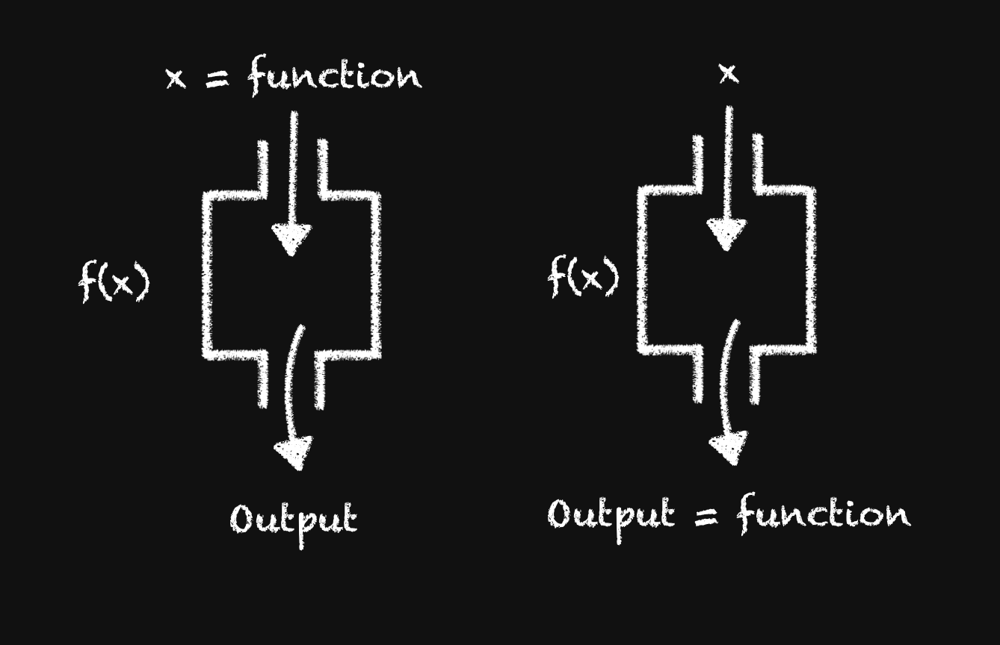
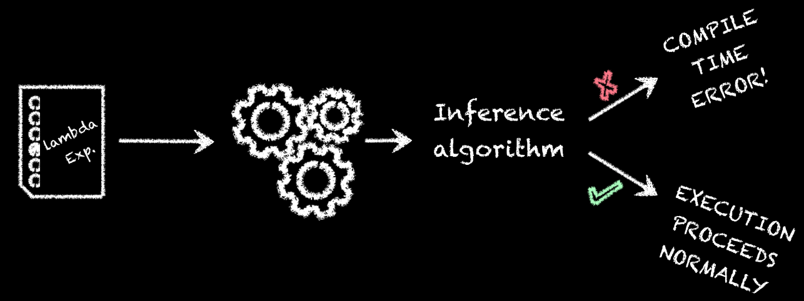
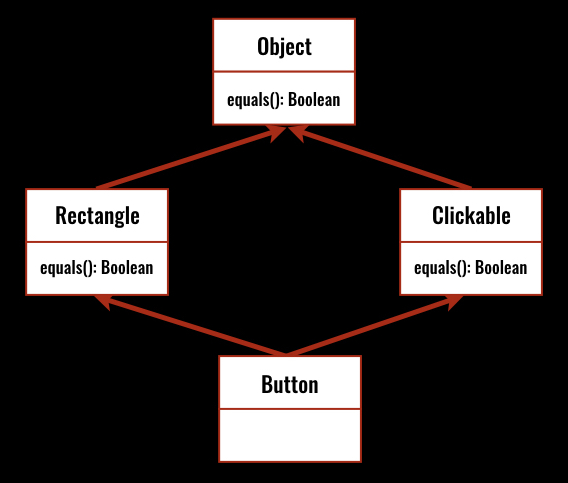
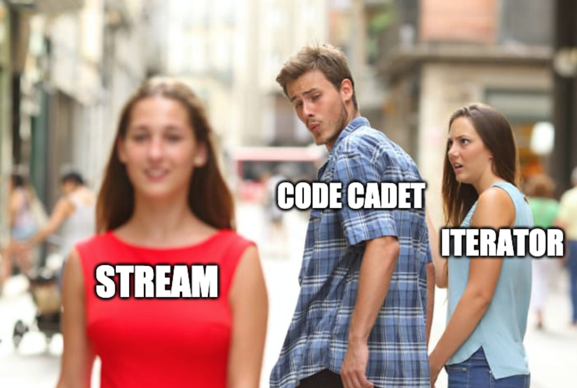
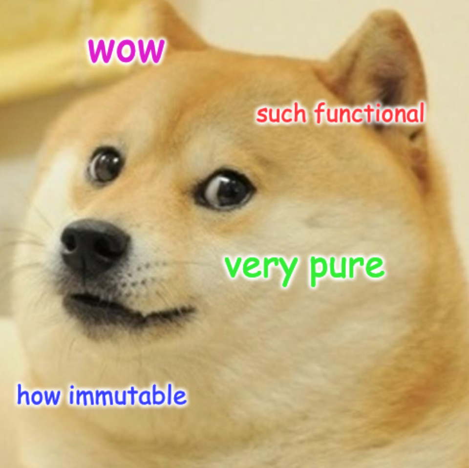
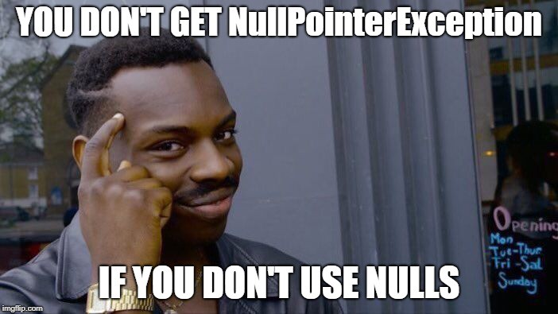

Since the early 2000s Functional Programming has seen a huge rise in popularity.
New languages, built with Functional Programming in mind, are coming into play:
Older ones like JavaScript, Python, and Java are adapting and bringing Functional Programming constructs to their feature list.
Functional Programming has been around since 1958, when LISP was specified by John McCarthy, a year before procedural programming appeared.
For decades Functional Programming and several LISP dialects were confined to academic settings, mostly related with AI research.
What changed in the last years and why the fresh popularity?the number of transistors in a dense integrated circuit doubles about every two years[Gordon Moore, 1965]
For 50 years this observation proved itself right, but we've reached its limits with the current technology.
In the last 15 years the trend is to add computing power by doubling the cores of the CPU.

Vertical scaling relies on improving the performance of a single core or machine.
Horizontal scaling distributes computation across several cores or machines.
In order to optimise these multiple cores we must slice our program into parallel parts. Which is not a simple task.
The burden of added complexity lies on the developer (synchronized blocks, locks, volatile variables, etc.)
Should it?...Parallelism is where it can play a major role by:
The compiler decides when and in what order these pure functions will be run.
Stream.of("Sérgio", "Rui", "Ruben", "Soraia", "Filipe", "Zé")
.filter(name -> name.length() <= 3)
.map(name -> name + " has three letters or less")
.forEach(System.out::println);
Is this Java? Is it some new language?
Despite the unfamiliar syntax of this block of code, it doesn't take long to guess what it does.
It's very declarative.
Declarative code like this spends time expressing the intent of its business logic - what it does - rather than the mechanics of how it’s achieved - how it does it.
It’s much easier to read, hence easier to maintain , more reliable , less error-prone.The quality or state of not being mixed with anything else.[Cambridge Dictionary]
A pure function is a function which operates only on its input parameters and produces a result.
Pure functions:
always produce the same result given the same input;
have no side effects;
A function has side effects if it:
It would be impossible to write a program without side effects. Functional programming tries to minimise and segregate side effects from the rest of the program, not eliminate them.
Using only pure functions greatly limits complexity since functions can only have a local effect. This helps developers naturally decompose their solutions.
Also:
Data immutability is a core concept of Functional Programming.
All variables and data structures must be immutable, making it impossible to change an object state once it was created.
The true constant is change. Mutation hides change. Hidden change manifests chaos. Therefore, the wise embrace history.[The Dao of Immutability]
Proper state management should be the most important concern in regard to the reliability of your code.
The very notion of encapsulation in OOP is already an attempt to make the flow of state more predictable.
With functional programming we're taking state management to the extreme
Java already provides the
final keyword to guarantee that a
reference cannot be changed after its
initialization.
final Square square = new Square(); // variable square will always point to the same object
// square = new Square(); -> compile time error
But final is not enough to ensure
data immutability
square.setColor("Blue");
square.setColor("Pink");
// unless all properties from Square are also marked as final, their values can be changed
To iterate is human, to recurse, divine.[L. Peter Deutsch]
How could you construct while or
for loops, which depend on a counter,
if data is immutable?
Even making an exception just this once, one could be tempted to create some side effect within these loops.
In the functional world the idiomatic way to handle repetitive operations is recursion.
If we look at the image above, which programming paradigm comes to mind, associated with each approach?
Iterative approach looks very imperative.
Recursive approach looks very declarative.
In functional programming, a function is a first-class citizen. In other words, we're able to work with code as data.
Being able to treat a function as a value, means you can store it in a variable or data structure, pass it as an argument of another function or use it as a return value.
This allows great flexibility and code reuse.Stand-alone functions like these are called Higher-Order Functions and they're often used to:
Composition allows programmers to assemble functions and reuse functionality that they or others have built in a pipeline where data flows from one function to the next.
Pure functions and immutability are mainly a matter of discipline, a decision by the programmer.
As for first-class functions, its availability is determined by the language. Some programming languages have this feature built-in.
Within Java there’s no way of passing an action as an argument of a method.
In mathematics and computing in general, a lambda expression is a function: for some or all combinations of input values it specifies an output value.
Anonymous inner classes already allowed us to pass functionality to a method. It was the closest to code as data in Java.
private List<Integer> numbers = Arrays.asList(8, 9, 200, 0, -1, 345);
public void sortNumbers() {
Collections.sort(numbers, new Comparator<Integer>() {
@Override
public int compare (Integer i1, Integer i2) {
return i1 - i2;
}
});
};
But they add a lot of boilerplate, and can disguise the programmer's intent.
Now there's be a better way of passing behavior to a method!Lambdas have a cleaner syntax and provide the same functionality as anonymous classes.
private List<Integer> numbers = Arrays.asList(8, 9, 200, 0, -1, 345);
public void sortNumbers() {
Collections.sort(numbers, (i1, i2) -> i1 - i2);
}
Instead of passing an object which implements an interface, we pass a block of code.
They let you treat functionality as a method argument.
(i1, i2) -> {
System.out.println("Comparing...");
return i1 - i2;
}
If the lambda body asks for more than one line, you must include brackets and the return keyword.
Lambdas like these are called lambda statements. Use them judiciously.
Lambdas lack names and documentation; if a computation isn’t self-explanatory, or exceeds a few lines, don’t put it in a lambda.[Joshua Block, Effective Java]
(num1, num2) -> num1 - num2; // two parameters, mandatory parentheses
() -> 42; // no parameters, mandatory parentheses
// only one parameter, you may omit the parentheses for better readability
position -> position.move(Direction.RIGHT, 3);
With one-liner bodies brackets may be ommitted, as
well as the return keyword.
Lambdas' variable capture obey the same general principles of anonymous classes.
public class Client {
private static int PORT = 3000;
private Socket socket;
public void start() {
String message = "Connected to server";
Thread t = new Thread(() -> {
socket = new Socket("localhost", PORT); // modifying and accessing fields
System.out.println(message); // accessing local variable
// message = "Connected to localhost"
// compile error if setting local variable
});
}
}
Just like any other method, the body of an anonymous class method defines a scope.
Lambda's body doesn't. The body of a lambda expression is part of the scope in which it's declared.
public void printPort() {
int port = 3000;
Thread t = new Thread(new Runnable() {
@Override
public void run() {
int port = 9000;
System.out.println(port) // 9000
}
});
}
public void printPort() {
int port = 3000;
Thread t = new Thread(() -> {
// Compile time error
// int port = 9000;
System.out.println(port) // 3000
});
}
Anonymous classes and lambdas also have access to
this (both implicitly and explicitly).
Inside an anonymous class, this refers
to the instance created by it.
Not with lambdas. Inside a lambda expression,
this refers to the invoking instance of
its enclosing class.
Some situations will always require the use of a good, old-fashioned, anonymous class.
@Override
public Iterator iterator() {
return new Iterator() {
@Override
public boolean hasNext() {...}
@Override
public Integer next() {...}
};
}
In this case, we couldn't have used a lambda expression.
The target of a lambda expression must ALWAYS be a functional interface.
Java interfaces that have exactly one abstract method.
public interface Runnable {
void run(); // also called functional method
}
Any interface that has more than one abstract method IS NOT a functional interface.
public interface MyComparator {
boolean compare(int i1, int i2);
}
MyComparator mc = (i1, i2) -> i1 > i2;
boolean result = mc.compare(3,7);
We can use Functional Interface type variables to store and use lambda expressions.
How can the compiler recognize the argument and return types of a lambda expression, if they are not specified in the lambda expression itself?

The answer lies in a concept called... Type inference!
Type inference is a Java compiler's ability to look at each method invocation and corresponding declaration to determine the type argument (or arguments) that make the invocation applicable.
This concept isn't exactly new. It's been present since we first started working with generics.
More succinct way of generating function objects. Lambdas on the left can be replaced by their corresponding method reference on the right.
name -> System.out.println(name);
word -> word.toUpperCase();
(num1, num2) -> Integer.sum(num1, num2);
System.out::println;
String::toUpperCase;
Integer::sum;
It is also possible to use method references with constructors.
// with lambda expression
CarFactory coolFactory = (col, row) -> new Car(col, row);
// with constructor reference;
CarFactory coolerFactory = Car::new;
// array with lambda expression
length -> new String[length];
// with constructor reference
String[]::new
java.util.functionWe've seen how Functional Interfaces can give us a lot of flexibility using lambda expressions. Remember the $.C.U.M. exercise?
It doesn't make a lot of sense to declare Functional Interfaces for every possible variation of argument and return type of its methods.
Of course the JDK already supplies us tools for all our Functional Interface needs.
| Interface | Arguments | Returns | Use Case Example |
|---|---|---|---|
| Supplier<T> | None | T | A factory method. |
| Consumer<T> | T | void | Printing a value. |
| Predicate<T> | T | boolean | Is cell painted? |
| Function<T,R> | T | R |
Get the id of an
Account object.
|
These are part of the
java.util.function package, and are all
functional interfaces.
To bring functional programming to the Java language, several changes within the Collections API were in order.
Prior to Java 8, updating a published API could create backward incompatibilities.
Evolving such a core library component like Collections - a strongly interface-based framework - was until Java 1.8 nearly impossible.
Interfaces in Java 8 can now declare methods with implementation code.
Existing classes implementing an interface automatically inherit the default implementation if they don’t provide one.
This allows programmers to evolve APIs non intrusively.Default methods added to Collection are built with high-quality general-purpose implementations. In most cases there’s no need for overriding.
An example: since Java 8, the List interface provides a sort method defined as follows:
default void sort(Comparator<? super E> c) {
Collections.sort(this, c);
}
Note the new default modifier before the return type. This is mandatory in order to declare a default method within an interface. Thanks to this new method you can sort a list by calling the method directly:
List<Integer> numbers = Arrays.asList(3, 5, 6, 33, 12, 1);
numbers.sort((n1, n2) -> n1 - n2);
Having implementation in interfaces makes it look like multiple inheritance is now possible in Java, and with it, the dreaded diamond problem.
If a class inherits two methods with the same signature which one is executed?
Java provides resolution rules to solve the diamond problem:
1. Classes always win
A method declaration in the class or a superclass takes priority over any default method implementation;2. Subtype wins over supertype
If we have a situation in which two interfaces are competing to provide a default method and one interface extends the other, the subclass wins;3. No rule 3
If the previous two rules don’t give us the answer, the subclass must either implement the method or declare it abstract.Another way of providing implementation code to interfaces is static methods.
List<Integer> numbers = Arrays.asList(3, 5, 6, 33, 12, 1);
numbers.sort(Comparator.naturalOrder());
Comparator.naturalOrder directly from
the naturalOrder is a new static method in
the Comparator interface that returns a
Comparator object to sort the elements
in natural order.
Java 8 most important core library changes were focused around the Collections API.
The way we iterate over a collection is about to change dramatically.
But what's wrong with the way we iterate?

forLet's start by performing a simple operation over some collection.
for(String name : names) {
System.out.println(name);
}
This very simple loop is still better than the
traditional for loop.
but we know it is just syntactic sugar for
another construct. Let's show it like it is:
Iterator<String> iterator = names.iterator();
while(iterator.hasNext()) {
System.out.println(iterator.next());
}
Both the traditional for loop and the iterator are inherently sequential and hard to parallelize.
Iterating over a Collection using a
for obscures meaning: to understand
what's happening one must read through the body of
the loop.
Instead we could ask the Collection itself to perform a polymorphic operation on its elements.
For a simple loop, it doesn't seem too hard, but it could become a burden on a large code base full of them (even worse with nested loops).The way we iterate until now is known as external iteration.
Since Java 8 it's possible to ask the collection to do the iteration for us. We just focus on what we need and not on how we do it.
names.forEach(name -> System.out.println(name));
forEach is a new default method in the
Iterable interface, thus allowing every
Collection to use it. It takes a
java.util.function.Consumer instance as
its argument.
With internal iteration we turn over most of the how's to the underlying library so we can focus on the essential what's
The forEach method is great for simple
operations in a declarative fashion, but for more
complex computations it's not enough.
Enter Java 8 Streams, the internal iteration analogue of iterators.
A Stream is an abstraction for a sequence of elements from a source, supporting aggregate operations leading to a desired result.
Working with streams, you'll need:
Unlike collections, streams don't store any data.
A collection is an in-memory data structure, which holds all the elements.
Collections are all about data, while streams are all about computations.
Stream elements are computed on demand.
Being an abstraction over a sequence of elements does not mean that a stream's source must be a Collection.
The source must provide data to the stream, be it a container, an I/O resource, a range, or some function that generates values.
It may even be another stream.The underlying data source is never modified by the stream.

Think about the operations we usually
perform on a collection of data.
The Stream API will provide a lot of these operations and will do them for you.
Individual stream operations are not very powerful on their own. The power of the Stream API lies in the possibilities created by composing those operations together.The power of a system comes more from the relationships among programs than from the programs themselves. Many UNIX programs do quite trivial things in isolation, but, combined with other programs, become general and useful tools.[Brian Kernighan and Rob Pike - The Unix Programming Environment]
Stream Intermediate Operations: return a stream themselves, allowing to chain operations in order to create a pipeline.
Stream Terminal Operations: return a new non-stream value, exhausting the stream.
Intermediate and terminal operations play different roles in the pipeline, which will enable certain optimizations, such as lazy evaluation and short-circuiting.java.util.stream
java.util.stream introduced in Java 8,
includes the Stream interface.
It's not a functional interface, but most of its methods will take some action as a parameter.
e.g. What do you want to filter? What do you want to find? What do you want to map? What?...stream()method.
List<String> names = new ArrayList<>();
// ...
Stream<String> namesStream = names.stream();
The Stream interface also includes the static method
of()
Bootcamp[] bootcamps = {
new Bootcamp("Lisbon"),
new Bootcamp("Fundão"),
new Bootcamp("Terceira"),
};
// a stream from an array of Bootcamps;
Stream<Bootcamp> bootcampStream = Stream.of(bootcamps);
// a stream from some random names
Stream<String> pulpNames = Stream.of("Mia", "Vincent", "Butch", "Jules", "Marsellus", "The Gimp");
String[] terminators = {"T-800", "T-1000", "Carl", "T-X", "Rev-9"};
long total = Stream.of(terminators)
.count();
count()
Stream.of(terminators)
.forEach(System.out::println);
forEach()
List<String> terminatorList = Stream.of(terminators)
.collect(Collectors.toList());
collect()
Almost all terminal operations produce something, reducing all the elements to a single value.
Stream API provides a general-purpose
reduce, which takes:
java.util.function.BinaryOperator,
the first argument being a partial result of
the reduction operation, and the second, the
next element.
int result = 0;
for(Integer number : numbers) {
result = doReduction(result, number);
}
numbers.stream()
.reduce(0, (acc, elem) -> acc + elem);
List<Integer> numbers = Arrays.asList(8, 3, 1, 99, 102, 55, 13);
long oddCount = 0;
for(Integer number : numbers) {
if(number % 2 != 0) {
oddCount++;
}
}
numbers.stream()
.filter(number -> number % 2 != 0)
.count();
filter() is an intermediate operation
that takes a
java.util.function.Predicate, and
returns a Stream of the elements that
matched the filtering condition.
String[] names = {"Ruben", "Rui", "Rodrigo", "Sid", "Soraia"};
Let's create a List of MCs whose names have more
than 3 letters:
List<MasterCoder> mcs = new ArrayList<>();
for (int i = 0; i < names.length; i++) {
if (names[i].length() < 3) {
continue;
}
mcs.add(new MasterCoder(names[i]));
}
Stream.of(names)
.filter(name -> name.length() > 3)
.map(name -> new MasterCoder(name))
.collect(Collectors.toList());
map is another intermediate operation
that takes a
java.util.function.Function
which will then be applied to each element,
mapping it to a new one.
String message = "I'll send an SOS to the garbage world, " +
"I hope that someone garbage gets my message in a garbage bottle.";
Remove all garbage from the message and turn it to all caps
Java SE 8 introduced three primitive specialized streams to avoid performance costs when dealing with numbers.
IntStream, LongStream, and
DoubleStream
The most used methods to convert a
Stream<T> to a specialized stream
are:
mapToInt, mapToLong, and
mapToDouble.
List<Warrior> warriors = new LinkedList<>();
// ...
int totalPower = warriors.stream() // returns a Stream<Warrior>
.mapToInt(warrior -> warrior.getPowerLevel()) // returns an IntStream
.filter(power -> power > 9000) // returns an IntStream for values above 9000
.sum(); // sum() is a specific terminal method of IntStream
Java 8 primitive streams provide some useful static methods to create a numeric stream.
range(exclusive) and
rangeClosed(inclusive)
IntStream evenNumbers = IntStream.range(0, 100)
.filter(number -> number % 2 == 0);
So far we've seen streams created from a collection of elements or, just now, from a range of integers.
But what if...
Stream.iterate and
Stream.generate are two methods
allowing to create a stream from a function.
Since stream elements are produced on demand these two operations can produce elements forever.
iterate() takes an initial value and a
java.util.function.UnaryOperator to
apply on each new value produced.
Stream<Integer> tens = Stream.iterate(0, n -> n + 10);
generate() takes a
java.util.function.Supplier which will
be called on demand.
IntStream randoms = IntStream.generate(() -> (int)(Math.random() * 100))
.limit(5); // limit bounds the number of elements
// produced by the stream

Parallelism (not the same as concurrency) aims to reduce the runtime of a specific task by breaking it down into smaller components and performing them in parallel, such as on a multicore CPU.
Making an operation execute in parallel using streams is a matter of changing a single method call.
On an existing Stream object, just call theparallel method;
When creating a Stream from a collection, calling
the parallelStream method.
Parallelism improves runtime execution drastically but it's not a golden hammer. Running a task in parallel requires more work to be done by the CPU than running it sequentially would.
For smaller data sizes, the overhead of decomposing it, may turn parallelism innefficient.
If the task per element is short and quick, sequential execution may also be faster.
When dealing with parallelism the pillars of Functional Programming assume the most importance.
If the order of the execution of the lambda expressions matter, parallel streams are not a viable solution (e.g. printing results);
The code should be able to run independently without causing any side effects or race conditions, i.e. make sure your lambda expressions are pure functions.I call it my billion-dollar mistake. It was the invention of the null reference in 1965.[Tony Hoare, creator of
null]
Prior to Java 8, there were two ways to deal with not being able to return a value:
And neither is perfect.
null?
java.lang.NullPointerException.
'nuff said.
null carries no type or other
information, meaning it can be assigned to any
reference type.
In Java 8 there's a third approach to writing methods that may or may not be able to return a value.
The Optional<T> class represents
an immutable container that can hold a single
non-null T reference or nothing at all.
It protects the programmer from getting a
NullPointerException and makes it quite
explicit to the reader that
no result found is a possible outcome.
private Map<Integer, Customer> customerMap = new HashMap<>();
// ...
public Customer get(Integer id) {
return customerMap.get(id);
}
The get method is built using a known
pattern: if there's no customer for some id, it
should return null. (Actually, it's the
same approach used by Java's
HashMap implementation).
public Optional<Customer> get(Integer id) {
return Optional.ofNullable(customerMap.get(id));
}
Other factory methods for creating an
Optional are of
, if you have a non-null object, or
empty for an empty Optional.
Optional<Customer> maybeCustomer = customerService.get(42);
// Returns a value if one is present; otherwise, throws NoSuchElementException.
// This is the "unsafe" operation
Customer customer = maybeCustomer.get();
// Checks for a value inside the optional. Not very functional
if(maybeCustomer.isPresent()) {
Customer customer = maybeCustomer.get();
}
// Takes a java.util.function.Consumer and takes an action
maybeCustomer.ifPresent(customer -> System.out.println(customer.getName()));
// set a default value in case of absence, using a java.util.function.Supplier
Customer customer = maybeCustomer.orElseGet(() -> new Customer("Joe Doe", 99));
Some stream terminal methods have by its own nature
the possibility of not returning a value. Instead of
null these methods will return
Optional<T>
findFirst()
findAny()
Others, from the primitive streams API, will return the primitive specialized version of an Optional.
average() returns an
OptionalDouble
min() and max() both
return an OptionalInt
Capable of performing these operations over files: